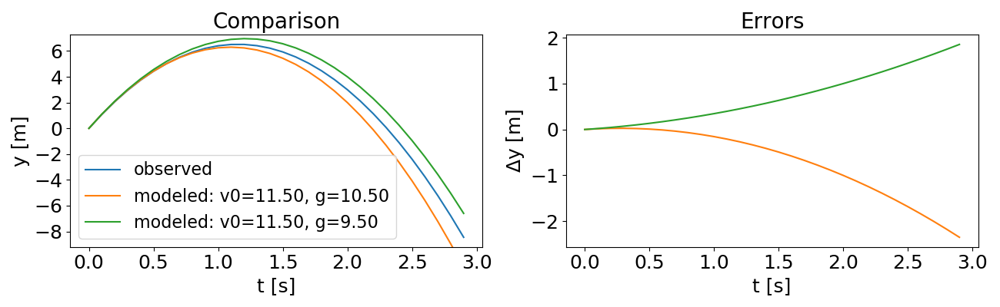

Technical Background¶
This page includes some references about Bayes’ Theorem and Bayesian inference and discusses the particulars of the implementation of these ideas within bayesim.
Bayes’ Theorem¶
There are a plethora of great explanations of Bayes’ Theorem out there already, so I won’t go through all the bayesics here but instead refer you to one of those linked above or any number of others you can find online or in a textbook.
Assuming you understand Bayes’ Theorem to your own satisfaction at this point, let’s remind ourselves of some terminology.
The \(\color{firebrick}{\mathbf{\text{posterior probability}}}\) of our hypothesis \(H\) given observed evidence \(E\) is the result of a Bayesian update to the \(\color{darkorange}{\mathbf{\text{prior}}}\) estimate of the probability of \(H\) given the \(\color{darkmagenta}{\mathbf{\text{likelihood}}}\) of observing \(E\) in a world where \(H\) is true and the probability of observing our \(\color{teal}{\mathbf{\text{evidence}}}\) in the first place.
Bayesian Inference and Parameter Estimation¶
Note
I haven’t found an online explanation of this material at a not-excessively-mathy level (I firmly believe that you don’t need a lot of knowledge of mathematical terminology to understand this; it can really be done in a very visual way) so I wrote my own. If you know of another, please send it to me and I’d be happy to link to it here!
Most of the examples used to explain Bayes’ Theorem have two hypotheses to disginguish between (e.g. “is it raining?”: yes or no). However, to use Bayes’ Theorem for parameter estimation, which is the problem of interest here, we need to generalize to many more than two hypotheses, and those hypotheses may be about the values of multiple different parameters. This can make it confusing to conceptualize how to generalize the types of computations we do to estimate the probability of the answer to a yes-or-no question or a dice roll to a problem statement relevant to a more general scientific/modeling inquiry.
Example: Kinematics
To illustrate how we do this, let’s use a simple example. Suppose we want to estimate the value of \(g\), the acceleration due to gravity near Earth’s surface, and \(v_0\), the initial velocity of a vertically launched projectile (e.g. a ball tossed straight up), based on some measured data about the trajectory of the ball. We know from basic kinematics that the height of the ball as a function of time should obey (assuming that the projectile’s initial height is defined as 0)
This function represents our model of the data we will measure and we can equivalently write
where we’ve now explicitly delineated our parameters \(g\) and \(v_0\) and our measurement condition \(t\).
Now let’s suppose we make a measurement after 2 seconds of flight and find that \(y(2)=3\), with an uncertainty in the measurement of 0.2. What does this mean about the possible values of \(g\) and \(v_0\)? First, we need to interpret the uncertainty number, meaning we need to introduce an error model. We’ll use a Gaussian distribution, a very common pattern for experimental errors in all kinds of measurements:
where \(\mu\) is the mean, \(\sigma\) is the standard deviation, and the term in front of the exponential is just a normalizing constant (to make sure that the probability distribution integrates to 1). The distribution looks like this:

You can see the impact of the two parameters - a larger \(\sigma\) value makes the distribution wider, while \(\mu\) simply shifts the center. (Image from Wikipedia.)
What this means for our example is that our measurement of \(y(2)=3.0 \pm 0.2\) is converted to a distribution of possible “true” values for \(y(2)\):
(I’m leaving off the normalization constant for convenience.) But what we really want is a probability distribution over our parameters, not over the measurement value itself. Fortunately, our model function lets us do just that! We can translate our distribution over possible measured values into one over possible parameter values using the model function:
Now we can visualize what that distribution looks like in “\(v_0\)-\(g\)” space:

On the left, the probability distribution over a wide range of possible values. On the right, zoomed in to near the true value of \(g\) to show Gaussian spread.
Another way we might want to visualize would be in the space of what the actual trajectories look like:

On the left, \(y(t)\) trajectories from \(t=0\) to \(t=3\). On the right, zooming in on the region indicated to see spread around y(2)=3.
So we can see that what the inference step did was essentially “pin” the trajectories to go through (or close to) the measured point at (t,*y*)=(2.0,3.0).
Now let’s suppose we take another measurement, a short time later: y(2.3)=0.1, but with a larger uncertainty, this time of 0.5. Now we return to Bayes’ Theorem - our prior distribution will be the conditional distribution from Equation (6) above, and the likelihood will be a new conditional distribution generated in exactly the same way but for this new data point. What does the posterior look like?

(Note that the axis limits are smaller than above)
As we would expect, we’re starting to zero in on a smaller region. And how about the trajectories?

Newly refined set of trajectories shown in red, overlaid on (paler) larger set from the previous step.
As expected, we’ve further winnowed down the possible trajectories. If we continued this process for more and more measurements, eventually zeroing in on the correct values with greater and greater precision.
bayesim’s implementation¶
Of course, when our model function isn’t a simple analytical equation but rather a numerical solver of some sort, we can’t evaluate it on a continuous parameter space but we instead have to discretize the space into a grid and choose points on that grid at which to simulate. This introduces a so-called “model uncertainty” proportional to the magnitude of the variation in the model output as one moves around the fitting parameter space.
This model uncertainty is calculated in bayesim at each experimental condition for each point in the parameter space as the largest change in model output from that point to any of the immediately adjacent points.
Let’s look at what the example described above looks like in bayesim (this code is also accessible via the Examples page). If we initialize a 10x10 grid in \(v_0\)-\(g\) space, after feeding in just those two observations, we have a probability distribution that looks like:

Not super well constrained…
bayesim also informs us that model uncertainty was used for likelihood calculation at every point. If instead we generate a full “observed” trajectory every 0.1 seconds for 3 seconds (assuming the larger uncertainty of \(\pm\) 0.5 m for every observation) and feed these observations in, we find…
Looking better!
We can also compare the trajectory from the highest-probability simulated point in parameter space with the “observations”:
Looking better!
If we subdivide our grid and repeat the inference, then we can do even better…

(Note that the axis limits have changed as we zoomed in)
Because this time there are two points of quite high probability, we’ll look at trajectories for both of them…
Look Ma, smaller errors!